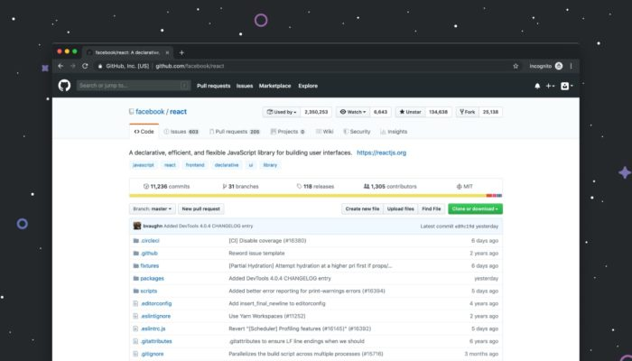

O GitHub é gratuito, exigindo apenas um cadastro para utilizar todos os seus recursos. Os projetos são hospedados em “repositórios”, que podem ter acesso público ou privado. Desde a compra pela Microsoft, todos os usuários têm acesso ilimitado a repositórios particulares.
Todo o gerenciamento dos projetos, como criação de novos repositórios, é feito via comandos do sistema Git. Você também pode gerenciá-los pelo site, mas normalmente os processos são executados via linha de comando do seu computador ou servidor. Saiba mais sobre o Git e seus conceitos básicos no site oficial.
Para sincronizar o projeto do seu computador com o GitHub, é necessário ter o Git instalado na máquina. Veja como instalá-lo de acordo com o seu sistema operacional.
Git ou GitHub?
Git e GitHub não são a mesma coisa. Git é o sistema de gerenciamento de versão gratuito e de código aberto criado por Linus Torvald, mesmo criador do Linux, em 2005. GitHub é a empresa que desenvolve soluções baseadas no Git, como a plataforma GitHub.com, que une o gerenciamento e hospedagem de código-fonte a funções de redes sociais, como feed, comunidades, fóruns, etc.